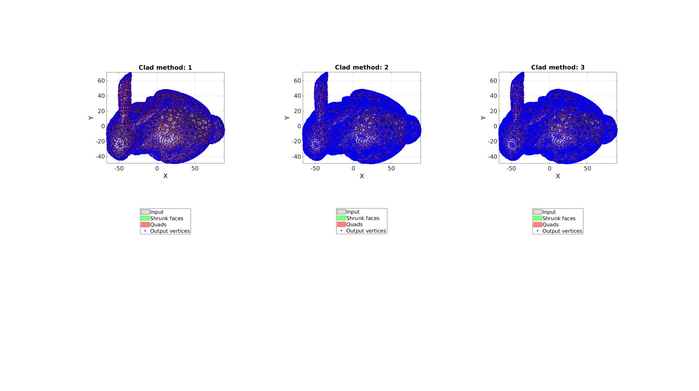
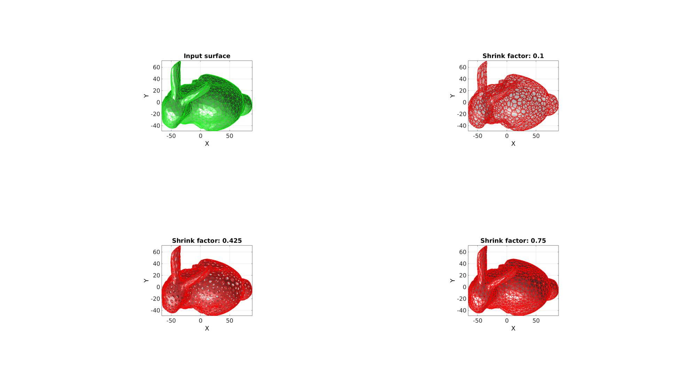
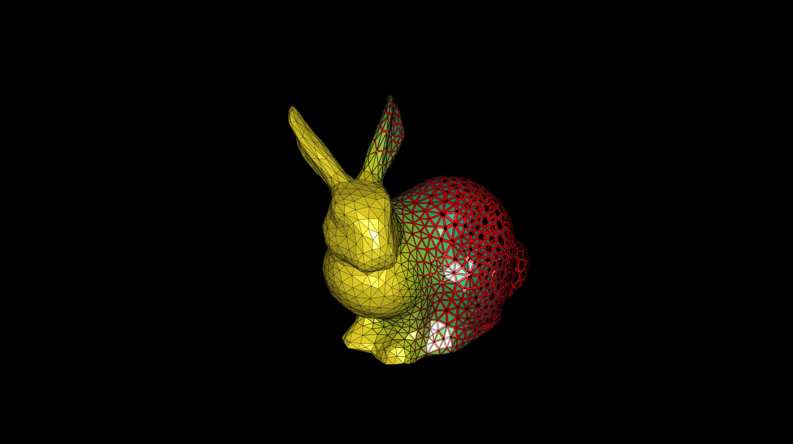
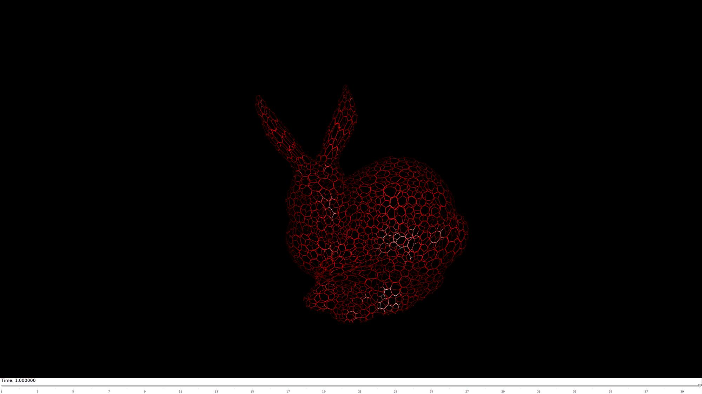

dualClad
Below is a demonstration of the features of the dualClad function
Contents
Syntax
[Fq,Vq,Fc,Vc]=dualClad(F,V,shrinkFactor,cladMethod);
Description
This function creates patch data defining a cladding on a surface. The cladding is obtained by shrinking the input faces around their mean and by connecting the face sides to form new faces. The output faces cover the edges of the dual of the input surface (hence the name). The output is the set of shrunk faces (same type as input) and a set of new quadrilateral faces connecting the shrunk faces. The shrink factor, which can be a constant or a spatially varying metric on the nodes or faces, defines the face and edge shrink used. The clad method determines whether the output mesh is connected: 1: From shrunk face to shrunk face 2: From shrunk face to shrunk edge to shrunk face 3: From shrunk face to shrunk face through edge (computes intersection at edge which may not be the centre of edge. This method avoids potential "kinks" seen for method 2.
Examples
clear; close all; clc;
Plot settings
figStruct.ColorDef='black'; figStruct.Color='k';
Specify test surface. Alter settings to test for different geometries and surface types.
%Testing settings testCase=2; %1= sphere, 2=bunny, 3=dino meshType=1; %1=triangles, 2=quadrilaterials cutMesh=0; %0=not cut, 1=cut in half switch testCase case 1 [F,V,~]=geoSphere(2,1); % Building a geodesic dome surface model shrinkFactor=0.25; case 2 [F,V]=stanford_bunny('g'); %Bunny V_mean=mean(V,1); V=V-V_mean(ones(size(V,1),1),:); shrinkFactor=0.25; case 3 [F,V]=parasaurolophus; %dino V_mean=mean(V,1); V=V-V_mean(ones(size(V,1),1),:); shrinkFactor=0.25; case 4 defaultFolder = fileparts(fileparts(mfilename('fullpath'))); pathName=fullfile(defaultFolder,'data','libSurf'); dataStruct=load(fullfile(pathName,'sprocket.mat')); F=dataStruct.F; V=dataStruct.V; shrinkFactor=0.5; case 5 defaultFolder = fileparts(fileparts(mfilename('fullpath'))); pathName=fullfile(defaultFolder,'data','libSurf'); dataStruct=load(fullfile(pathName,'enginePart_p1.mat')); F=dataStruct.F; V=dataStruct.V; shrinkFactor=0.5; end if meshType==2 [F,V]=tri2quad(F,V); end if cutMesh==1 logicKeep=V(:,1)<mean(V(:,1)); logicKeep=all(logicKeep(F),2); F=F(logicKeep,:); [F,V]=patchCleanUnused(F,V); end
Example 1: Explaining the clad method
Define dualClad settings, i.e. the cladMethod and the shrink factor.
cladMethods=[1 2 3]; %1= fact-to-face connections, 2=
Visualize results
cFigure; for q=1:1:numel(cladMethods) [Fq,Vq,Fc,Vc]=dualClad(F,V,shrinkFactor,cladMethods(q)); subplot(1,3,q); hold on; title(['Clad method: ',num2str(cladMethods(q))]); h(1)=gpatch(F,V,'kw','k',0.25); h(2)=gpatch(Fc,Vc,'gw','g',1); h(3)=gpatch(Fq,Vq,'rw','r',1); h(4)=plotV([Vc;Vq],'b.','MarkerSize',15); axisGeom; camlight headlight; view(2); hl=legend(h,{'Input','Shrunk faces','Quads','Output vertices'}); hl.Location='SouthOutside'; end drawnow;
Example 2: Explaining the shrink factor
Define dualClad settings, i.e. the cladMethod and the shrink factor.
cladMethod=3; %1= fact-to-face connections, 2= shrinkFactors=linspace(0.1,0.75,3); %A range of shrink factors
Visualize results
cFigure; subplot(2,2,1); hold on; title('Input surface'); gpatch(F,V,'gw','g',1); axisGeom; camlight headlight; view(2); for q=1:1:numel(shrinkFactors) [Fq,Vq,Fc,Vc]=dualClad(F,V,shrinkFactors(q),cladMethod); subplot(2,2,q+1); hold on; title(['Shrink factor: ',num2str(shrinkFactors(q))]); gpatch(Fc,Vc,'rw','r',1); gpatch(Fq,Vq,'rw','r',1); gpatch(F,V,'kw','none',0.25); axisGeom; camlight headlight; view(2); end drawnow;
Example 3: Spatially varying shrink factors
An animation will be created to show effect of a spatially varying shrink factor
cladMethod=3;
% Define spatially varying shrink factor
shrinkFactor=-V(:,1);
shrinkFactor=mean(shrinkFactor(F),2);
shrinkFactor=shrinkFactor-min(shrinkFactor(:));
shrinkFactor=shrinkFactor./max(shrinkFactor(:));
shrinkFactor=shrinkFactor*1.2;
shrinkFactor=shrinkFactor+0.05;
shrinkFactor(shrinkFactor>1)=1;
[Fq,Vq,Fc,Vc]=dualClad(F,V,shrinkFactor,cladMethod);
Animating the effect of the shrink factor
Initialize scene
hf=cFigure(figStruct); hold on; hp1=gpatch(Fc,Vc,shrinkFactor,'k',1); hp2=gpatch(Fq,Vq,'r','none',1); axisGeom; camlight headlight; colormap(viridis(250)); caxis([0 1]); drawnow; axis off axis manual;
Animate scene
nSteps=40; %Number of animation steps animStruct.Time=linspace(0,1,nSteps); %Create the time vector t=linspace(0,2,nSteps); shrinkFactor=-V(:,1); shrinkFactor=mean(shrinkFactor(F),2); shrinkFactor=shrinkFactor-min(shrinkFactor(:)); shrinkFactor=shrinkFactor./max(shrinkFactor(:)); shrinkFactor=shrinkFactor+1; minLevel=0.05; for q=1:1:nSteps shrinkFactorNow=shrinkFactor; shrinkFactorNow=shrinkFactorNow-t(q); shrinkFactorNow(shrinkFactorNow<minLevel)=minLevel; shrinkFactorNow(shrinkFactorNow>1)=1; [Fq,Vq,Fc,Vc]=dualClad(F,V,shrinkFactorNow,cladMethod); %Set entries in animation structure animStruct.Handles{q}=[hp1 hp2 hp1]; %Handles of objects to animate animStruct.Props{q}={'Vertices','Vertices','CData'}; %Properties of objects to animate animStruct.Set{q}={Vc,Vq,shrinkFactorNow}; %Property values for to set in order to animate end anim8(hf,animStruct); %Initiate animation

GIBBON www.gibboncode.org
Kevin Mattheus Moerman, gibbon.toolbox@gmail.com
GIBBON footer text
License: https://github.com/gibbonCode/GIBBON/blob/master/LICENSE
GIBBON: The Geometry and Image-based Bioengineering add-On. A toolbox for image segmentation, image-based modeling, meshing, and finite element analysis.
Copyright (C) 2019 Kevin Mattheus Moerman
This program is free software: you can redistribute it and/or modify it under the terms of the GNU General Public License as published by the Free Software Foundation, either version 3 of the License, or (at your option) any later version.
This program is distributed in the hope that it will be useful, but WITHOUT ANY WARRANTY; without even the implied warranty of MERCHANTABILITY or FITNESS FOR A PARTICULAR PURPOSE. See the GNU General Public License for more details.
You should have received a copy of the GNU General Public License along with this program. If not, see http://www.gnu.org/licenses/.